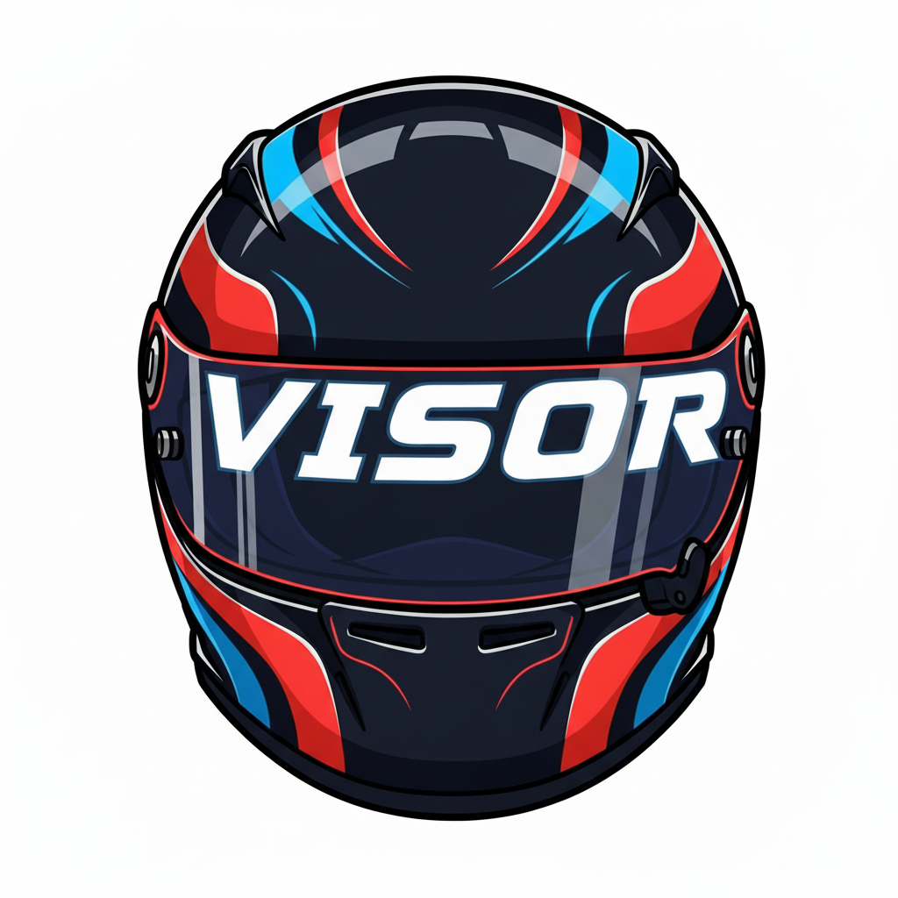

VISOR (Virtual Intelligence Simulator Overlay & Radar) is a real-time telemetry overlay for iRacing that displays race-critical information including position tracking, fuel calculations, lap delta analysis, and proximity radar.
The Configuration Window lets you customize VISOR's display and controls which information appears during your race.
Choose from three size options that scale both the Main Window and Radar Window:
Toggle individual rows on or off based on what information you want visible:
Row 0: Gear Indicator + Class Position - Current gear (R/N/1-6) and your position within your class (not overall position).
Row 1: Time Remaining + Fuel Remaining - Session time or laps remaining, and estimated laps of fuel based on your recent fuel consumption.
Row 2: Lap Delta Bar - Visual bar showing performance against your session best lap. Green (right): faster, Red (left): slower. Updates in real-time.
Row 3: Last Lap Time + Best Lap Time - Your most recently completed lap time and fastest lap this session.
Row 4: Relative Positioning Table - Shows 3 cars ahead and 3 behind you. Car number with class color background, proximity bar shows distance. Your car highlighted in yellow. Automatically hidden in Lone Qualifying sessions.
Row 5: Warnings - Incident count that shifts from white to yellow to red as you approach the session's incident limit, a pace warning (📉) when your lap pace drops and stays down, a red dot (•) confirming contact damage, and a flashing "PIT" warning when stopping for repairs would save you time.
Radar Window - Toggle proximity radar showing nearby cars in 5 lateral zones with spotter-style zone highlighting.
When the Configuration Window is open, both Main and Radar Windows display drag handles in the top-left corner. Click and drag to reposition. Positions save when you click "Done."
Displays current gear: "R" for reverse, "N" for neutral, numbers for forward gears. Uses digital-style font for quick readability.
Shows your position within your car class (not overall). In practice/qualifying: based on fastest lap times. In races: real-time track position.
Timed Sessions: Time remaining in HH:MM:SS or MM:SS format. Lap-Limited: Laps remaining for leader (+1 to iRacing's value). Qualifying: Personal laps completed/total allowed. Shows "Final Lap" on white flag, "FINISHED" on checkered.
Estimates laps of fuel using rolling 3-lap average of consumption. Updates after each lap. Format: "X.X Laps". Most accurate after 3+ consistent laps.
Real-time comparison vs. session best. Bar grows from center: Right (green): faster, Left (red): slower, Center: matching pace. Range: ±3 seconds.
Last Lap: Most recent lap (M:SS.mmm). Best Lap: Fastest valid lap this session (M:SS.mmm). Both reset on new session.
Shows 7 rows: 3 ahead, your car (yellow), 3 behind. Sorted by proximity, not position. Visual Indicators: Yellow = you, White = same lap, Blue = lapped by you, Red = lapping you, Italic = on pit road. Proximity Bar: Cyan gradient (ahead/close), Orange gradient (behind/close), Gray (nearby). Automatically filters disconnected drivers.
Incident Counter: Session incidents (0x, 4x, etc.). The color tracks how close you are to the session's incident limit rather than a fixed count, so it means the same thing whether your limit is 4x or 25x: white below ~30% of the limit, yellow from there to ~60%, and red beyond ~60% (roughly one bad incident from a DQ). Unlimited sessions use a gentle informational scale.
Pace Warning (📉): Lights when your lap pace drops and stays down compared to your own established clean pace — flagging real lost time from damage, tire wear, or changing track conditions, rather than a single off lap. It needs the loss to hold for a couple of laps; after contact it reacts a lap sooner (see below). It clears once your pace returns to normal.
Persistent Dot (•): Confirms contact damage — it appears when a hard hit (a 4x incident) is accompanied by lost pace. Unlike the pace warning, it stays lit until you pit, because damage doesn't heal by driving. A spin or off-track that doesn't involve contact won't trigger it.
PIT Warning: Flashes when the time you'd lose limping to the finish outweighs the cost of pitting to fix the car. It waits for the pace loss to be confirmed (and not recovering) before recommending a stop, so it won't cry wolf over a momentary slow lap.
After contact: A hard hit primes the system — if the first full lap afterward is slow, the pace warning and dot appear immediately, and a second slow lap throws PIT. If that first lap is fine, the car is treated as undamaged and nothing fires.
Top-down proximity view with 5 vertical zones (far left, near left, center, near right, far right). Your car: green rectangle in center. Other cars: colored by class. Detection range: ~5 car lengths ahead/behind.
Zones highlight based on iRacing spotter: left zone = car left, right zone = car right, both = cars both sides, two zones = multiple cars. Matches native spotter calls.
Automatically fades out when no cars in range, fades in when cars approach. Hidden automatically in Lone Qualifying.
Position: Based on fastest lap time. Relative: Sorted by proximity. Updates: On faster lap completions.
Position: Real-time track position (lap + distance). Relative: Cars physically near you. Lapped traffic: Color-coded (blue/red).
Relative Table and Radar Window automatically hide (no other cars on track simultaneously).
For questions, bug reports, or feedback:
Email: info@cephasmedia.com
License: Personal use only. See LICENSE.txt for full terms.